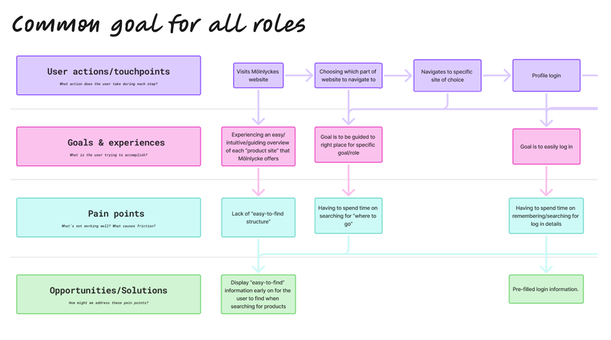

Mölnlycke Health Care
Designing within a global healthcare organization.
During my internship at Mölnlycke Health Care, I had the opportunity to work closely with real-world challenges within healthcare and digital product development. The experience allowed me to apply my UX design skills in a meaningful context, focusing on user needs, collaboration, and creating solutions that support both patients and healthcare professionals.
At the beginning of the internship, we shadowed two UX designers responsible for the global website and the portal where hospitals purchase products. This gave me early insight into how large-scale digital platforms are managed and evolved within a global organization. Together with another intern, I also contributed to defining Mölnlycke's design principles during the first weeks. We facilitated workshops, synthesized insights, and presented the outcome to the team. In parallel, we began structuring the foundation for an upcoming design system, helping to create alignment and consistency across future digital products.
This case highlights my process, key insights, and the impact of my work during the internship.
UX review of BIOGEL
As part of my internship at Mölnlycke Health Care, I conducted a UX review of the BIOGEL app, a tool designed to help healthcare professionals scan their hands and determine the correct glove size. The review focused on evaluating usability, identifying friction points in the user flow, and uncovering opportunities to improve clarity, guidance, and overall user experience.
Insights from this review contributed to recommendations aimed at making the app more intuitive and efficient in a clinical context.

A seamless Mölnlycke
As part of my work at Mölnlycke Health Care, I explored a concept for creating a more seamless user experience across touchpoints. This included developing user stories and defining key personas to better understand different user needs and contexts.
Based on these insights, I created a high-level umbrella model that connects services, interactions, and user journeys into a more cohesive experience.
The goal was to provide a strategic foundation for how Mölnlycke can deliver a more consistent and integrated experience for healthcare professionals.

Procurement
Find → Evaluate → Compare → Purchase → Follow-up
Headnurse
Find → Learn → Share → Track.
Surgeon
Find → Understand → Compare → Trial → Adopt
Common for all roles
Find → Understand → Act → Follow-up
What I brought back home
During my internship at Mölnlycke Health Care, I gained valuable experience working as a UX designer within a large, global organization. I developed a deeper understanding of how design decisions are shaped by multiple stakeholders, business goals, and regulatory considerations, especially within the healthcare domain.
Working in this environment taught me how to navigate complexity, communicate design decisions clearly, and collaborate across different teams and disciplines. I also strengthened my ability to balance user needs with organizational constraints, and to think more strategically about how design fits into a broader ecosystem.
Overall, the experience gave me a strong foundation in working within larger structures and reinforced the importance of clarity, alignment, and adaptability in the design process.